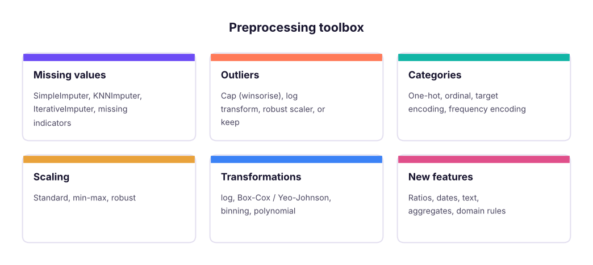
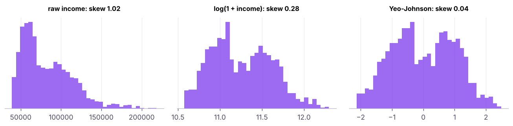

Data Preprocessing and Feature Engineering for ML
Prepare features that models can learn from. Imputation strategies, outlier handling, encoding categorical variables (one-hot, ordinal, target encoding), scaling (standard, min-max, robust), transformations (log, Box-Cox/Yeo-Johnson), binning, interactions and polynomial features, date and text features, and feature selection, all inside leak-free pipelines.
- Impute missing values with simple, group-aware and model-based strategies and add missing indicators
- Encode nominal and ordinal categories correctly, including high-cardinality columns
- Choose a scaler and know which algorithms need scaling
- Engineer features from numbers, dates, text and domain knowledge
- Select features with filter, wrapper and embedded methods without leaking test data
Why preprocessing matters
Algorithms only see numbers. How you represent the data often matters more than which algorithm you choose ("better data beats fancier models").

Missing values
import pandas as pd, numpy as np
from sklearn.impute import SimpleImputer, KNNImputer
from sklearn.experimental import enable_iterative_imputer # noqa: F401
from sklearn.impute import IterativeImputer
h = pd.read_csv("house_prices.csv")
num = h[["area_sqft", "bedrooms", "bathrooms", "age_years", "price_lakh"]]
mask = num.area_sqft.isna(); print("missing area:", mask.sum())
for name, imp in [("median", SimpleImputer(strategy="median")), ("KNN (5 neighbours)", KNNImputer(n_neighbors=5)), ("iterative (regression)", IterativeImputer(random_state=0))]:
filled = pd.DataFrame(imp.fit_transform(num), columns=num.columns)
print(f"{name:24s} imputed areas: mean {filled.loc[mask, 'area_sqft'].mean():7.0f}, sd {filled.loc[mask, 'area_sqft'].std():6.0f}")
print("SimpleImputer(add_indicator=True) adds a column:", SimpleImputer(strategy="median", add_indicator=True).fit(num[["area_sqft"]]).get_feature_names_out().tolist())missing area: 25 median imputed areas: mean 1240, sd 0 KNN (5 neighbours) imputed areas: mean 1396, sd 294 iterative (regression) imputed areas: mean 1384, sd 310 SimpleImputer(add_indicator=True) adds a column: ['area_sqft', 'missingindicator_area_sqft']
The median fills every gap with one value (sd 0); KNN and iterative imputers use the other columns (bedrooms, price), so they produce realistic, varied values. In real projects compare strategies with cross-validation, and never use the target to impute features at prediction time.
Encoding categorical variables
from sklearn.preprocessing import OneHotEncoder, OrdinalEncoder, TargetEncoder
hr = pd.read_csv("hr_employees.csv")
print(hr.education.unique().tolist(), hr.department.nunique(), "departments |", hr.job_title.nunique(), "job titles")
oh = OneHotEncoder(handle_unknown="ignore", sparse_output=False).fit(hr[["department"]])
print("one-hot:", oh.get_feature_names_out().tolist())
order = [["Diploma", "Bachelor's", "Master's", "PhD"]]
present = [e for e in order[0] if e in set(hr.education)]
oe = OrdinalEncoder(categories=[present]).fit(hr[["education"]])
print("ordinal:", dict(zip(present, oe.transform(pd.DataFrame({"education": present})).ravel())))
y = (hr.attrition == "Yes").astype(int)
te = TargetEncoder(target_type="binary", random_state=0).fit(hr[["job_title"]], y)
print("target encoding (smoothed attrition rate per job title, first 4):", dict(zip(te.categories_[0][:4], te.encodings_[0][:4].round(3))))
print("frequency encoding:", hr.job_title.map(hr.job_title.value_counts(normalize=True)).round(3).head(3).tolist())["Bachelor's", "Master's", 'Diploma', 'PhD'] 6 departments | 18 job titles
one-hot: ['department_Finance', 'department_HR', 'department_IT', 'department_Operations', 'department_R&D', 'department_Sales']
ordinal: {'Diploma': np.float64(0.0), "Bachelor's": np.float64(1.0), "Master's": np.float64(2.0), 'PhD': np.float64(3.0)}
target encoding (smoothed attrition rate per job title, first 4): {'Accountant': np.float64(0.256), 'Analyst': np.float64(0.28), 'Data Scientist': np.float64(0.247), 'Developer': np.float64(0.295)}
frequency encoding: [0.049, 0.063, 0.063]| Encoding | For | Notes |
|---|---|---|
| One-hot | Nominal, few categories | One column per category; handle_unknown="ignore"; drop="first" for linear models if needed |
| Ordinal | Ordered categories (education, size S/M/L) | Give the order explicitly |
| Target encoding | High-cardinality nominal (job title, city, merchant) | Uses the target: must be cross-fitted (sklearn's TargetEncoder does this) |
| Frequency / count | High cardinality | Simple, leak-free |
| Hashing, embeddings | Very high cardinality (IDs, text) | Fixed size; embeddings in deep learning |
Mapping cities to 0, 1, 2… tells linear models and KNN that "Pune (2) > Delhi (1)", a false order. Use one-hot encoding for nominal variables (tree models tolerate ordinal codes better).
Scaling
from sklearn.preprocessing import StandardScaler, MinMaxScaler, RobustScaler
inc = hr[["monthly_income"]]
out = pd.DataFrame({"raw": inc.monthly_income})
for name, sc in [("standard", StandardScaler()), ("minmax", MinMaxScaler()), ("robust", RobustScaler())]: out[name] = sc.fit_transform(inc).ravel()
print(out.describe().loc[["mean", "std", "min", "50%", "max"]].round(2))raw standard minmax robust mean 82610.67 -0.00 0.24 0.18 std 31145.80 1.00 0.17 0.71 min 39167.00 -1.40 0.00 -0.81 50% 74708.50 -0.25 0.20 0.00 max 218417.00 4.36 1.00 3.28
| Scaler | Result | Use |
|---|---|---|
| StandardScaler | mean 0, sd 1 | Default for linear models, SVM, PCA, neural networks |
| MinMaxScaler | range 0–1 | Bounded inputs (neural networks, images) |
| RobustScaler | median 0, IQR 1 | Data with outliers |
Needs scaling: KNN, K-means, SVM, PCA, regularised linear/logistic regression, neural networks, gradient descent. Does not: decision trees, random forests, gradient boosting (they split on thresholds).
Transformations

Log transforms help linear models with multiplicative effects (prices, incomes) and can be applied to the target too (TransformedTargetRegressor). Binning (KBinsDiscretizer, pd.cut) trades detail for robustness and interpretability.
Feature engineering
Good features encode domain knowledge the algorithm cannot easily find.
hr["hire_date"] = pd.to_datetime(hr.hire_date)
fe = pd.DataFrame({
"income_per_year_tenure": hr.monthly_income / (hr.years_at_company + 1), # ratio
"is_long_commute": (hr.distance_from_home_km > 20).astype(int), # threshold from domain knowledge
"overtime_x_low_sat": ((hr.overtime == "Yes") & (hr.job_satisfaction <= 2)).astype(int), # interaction
"hire_month": hr.hire_date.dt.month, "hired_in_q4": hr.hire_date.dt.quarter.eq(4).astype(int), # date parts
"income_vs_dept_median": hr.monthly_income / hr.groupby("department").monthly_income.transform("median"), # group-relative
"title_is_manager": hr.job_title.str.contains("Manager").astype(int), # text pattern
})
fe["left"] = (hr.attrition == "Yes").astype(int)
print(fe.corr()["left"].drop("left").round(3).sort_values())
print(fe.groupby("overtime_x_low_sat").left.mean().round(3).to_dict())income_vs_dept_median -0.109
title_is_manager -0.048
hire_month 0.038
hired_in_q4 0.043
income_per_year_tenure 0.057
is_long_commute 0.094
overtime_x_low_sat 0.165
Name: left, dtype: float64
{0: 0.229, 1: 0.43}| Source | Feature ideas |
|---|---|
| Numbers | Ratios, differences, logs, bins, polynomial and interaction terms |
| Dates | Day of week, month, holiday flags, days since last event, tenure, seasonality (sin/cos) |
| Transactions | Recency, frequency, monetary (RFM), averages over 7/30/90 days, trends |
| Text | Length, keyword flags, TF-IDF, embeddings (lesson 25 and GenAI track) |
| Geography | Distance to centre/store, region aggregates |
| Groups | Value relative to group mean/median (income vs department) |
from sklearn.preprocessing import PolynomialFeatures
pf = PolynomialFeatures(degree=2, include_bias=False).fit(pd.DataFrame({"area": [1], "age": [1]}))
print(pf.get_feature_names_out().tolist())['area', 'age', 'area^2', 'area age', 'age^2']
Feature selection
More features are not always better: irrelevant ones add noise, cost and overfitting.
from sklearn.feature_selection import mutual_info_classif, SelectKBest, RFE
from sklearn.linear_model import LogisticRegression
from sklearn.ensemble import RandomForestClassifier
Xn = pd.get_dummies(hr[["age", "monthly_income", "years_at_company", "job_satisfaction", "distance_from_home_km", "performance_rating", "overtime", "department"]], drop_first=True).astype(float)
mi = pd.Series(mutual_info_classif(Xn, y, random_state=0), index=Xn.columns).sort_values(ascending=False)
print("filter (mutual information):", mi.round(3).head(5).to_dict())
rfe = RFE(LogisticRegression(max_iter=2000), n_features_to_select=4).fit(StandardScaler().fit_transform(Xn), y)
print("wrapper (RFE, logistic):", Xn.columns[rfe.support_].tolist())
rf = RandomForestClassifier(300, random_state=0, min_samples_leaf=5).fit(Xn, y)
print("embedded (random forest importance):", pd.Series(rf.feature_importances_, Xn.columns).sort_values(ascending=False).round(3).head(5).to_dict())filter (mutual information): {'years_at_company': 0.025, 'job_satisfaction': 0.019, 'department_HR': 0.017, 'monthly_income': 0.009, 'overtime_Yes': 0.007}
wrapper (RFE, logistic): ['years_at_company', 'job_satisfaction', 'distance_from_home_km', 'overtime_Yes']
embedded (random forest importance): {'monthly_income': 0.242, 'distance_from_home_km': 0.18, 'age': 0.155, 'years_at_company': 0.117, 'job_satisfaction': 0.108}The three methods disagree. That is normal: they measure different things. Random-forest (impurity) importances also favour continuous features with many distinct values, so check them with permutation importance (lesson 27).
| Method | How | Pros / cons |
|---|---|---|
| Filter | Score each feature (correlation, chi-square, mutual information) | Fast; ignores interactions |
| Wrapper | Search subsets with a model (RFE, forward selection) | Strong; slow, risk of overfitting |
| Embedded | Selection during training (Lasso L1, tree importances) | Efficient; model-specific |
Do feature selection inside cross-validation (in the pipeline) so the test data never influences which features are chosen.
Putting it together: a leak-free pipeline
from sklearn.compose import ColumnTransformer
from sklearn.pipeline import Pipeline, make_pipeline
from sklearn.model_selection import cross_val_score
X = hr.drop(columns=["emp_id", "attrition", "hire_date"])
pre = ColumnTransformer([
("num", make_pipeline(SimpleImputer(strategy="median"), StandardScaler()), ["age", "years_at_company", "monthly_income", "job_satisfaction", "distance_from_home_km", "performance_rating"]),
("ord", OrdinalEncoder(categories=[present]), ["education"]),
("ohe", OneHotEncoder(handle_unknown="ignore"), ["gender", "department", "overtime", "city"]),
("te", TargetEncoder(target_type="binary", random_state=0), ["job_title"]),
])
pipe = Pipeline([("pre", pre), ("sel", SelectKBest(mutual_info_classif, k=12)), ("model", LogisticRegression(max_iter=2000))])
scores = cross_val_score(pipe, X, y, cv=5, scoring="roc_auc")
print(f"5-fold ROC-AUC {scores.mean():.3f} ± {scores.std():.3f}")5-fold ROC-AUC 0.668 ± 0.009
Summary
- Impute with medians/modes, KNN or iterative imputers, and add missing-value indicators when missingness carries information.
- One-hot for nominal, ordinal encoding with an explicit order, target or frequency encoding for high-cardinality columns.
- Scale for distance- and gradient-based models (standard, min-max, robust); trees do not need scaling.
- Transform skewed variables (log, Yeo-Johnson); engineer ratios, interactions, date and group-relative features from domain knowledge.
- Select features with filter, wrapper or embedded methods, always inside the cross-validated pipeline.
1. Which encoding suits "education level" (Diploma < Bachelor's < Master's < PhD)?
2. Which algorithm does NOT need feature scaling?
3. Why must target encoding be cross-fitted?
4. What does RobustScaler use?
5. Where should feature selection happen?
6. Which is an interaction feature?
(1) Engineer price_per_sqft, rooms = bedrooms + bathrooms, is_new = age_years <= 5. Which correlate most with price? (Careful: price_per_sqft uses the target, so it cannot be a feature!) (2) Build a pipeline with KNN imputation, one-hot city, standard scaling and Ridge regression; report 5-fold R². (3) Try a log-transformed target with TransformedTargetRegressor.
Show solution
from sklearn.linear_model import Ridge
from sklearn.compose import TransformedTargetRegressor
h["rooms"] = h.bedrooms + h.bathrooms; h["is_new"] = (h.age_years <= 5).astype(int)
Xh = h.drop(columns=["house_id", "price_lakh"]); yh = h.price_lakh
pre_h = ColumnTransformer([("num", make_pipeline(KNNImputer(), StandardScaler()), ["area_sqft", "bedrooms", "bathrooms", "age_years", "distance_to_center_km", "parking", "rooms", "is_new"]), ("cat", OneHotEncoder(handle_unknown="ignore"), ["city"])])
print(cross_val_score(Pipeline([("p", pre_h), ("m", Ridge())]), Xh, yh, cv=5, scoring="r2").mean())
print(cross_val_score(Pipeline([("p", pre_h), ("m", TransformedTargetRegressor(Ridge(), func=np.log1p, inverse_func=np.expm1))]), Xh, yh, cv=5, scoring="r2").mean())Q: How do you handle categorical variables with 1,000 levels? Target encoding (cross-fitted), frequency encoding, grouping rare levels into "Other", hashing, or learned embeddings; tree-based libraries like CatBoost handle them natively.
Q: Normalisation vs standardisation? Normalisation (min-max) rescales to 0–1; standardisation centres to mean 0 and sd 1. Use standardisation by default; min-max for bounded inputs.
Q: Give an example of a feature you engineered that helped. Use STAR: e.g. "days since last purchase" and "spend in the last 30 days vs previous 30" for churn, which raised recall in the top decile from X to Y.
Practise more online
Free, trusted places to test yourself on this topic. Links open the original site in a new tab.